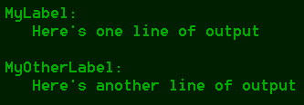

A Detroubulator report is a chunk of software that presents test results to you. How it does this varies: A report could send an email, create an HTML document, display the results on the screen, generate a spreadsheet etc. Detroubulator comes with four built-in reports and the option of adding your own, custom reports. This document tells you how to add reports to the test file, how to configure them, how the built-in reports work and how to write your own, custom reports.
To add a report to the test file, you need to add a <testreport> element below the <reporting> element. The <testreport> element's type attribute determines what kind of report you're adding. To configure the report, i.e. supply information such as where an HTML document should be stored on disk, add a <configuration> element below the <testreport> element. The configuration consists of a number of <parameter> elements, each containing a name/value pair. Here's an example of adding and configuring an HTML report:
<reporting>
<testreport type="html">
<configuration>
<parameter name="dumpdir">dumped_output</parameter>
<parameter name="file">results.html</parameter>
</configuration>
</testreport>
</reporting>
The test file schema dictates that the <reporting> element must contain at least one <testreport> element, i.e. you need to add at least one report in order to run your tests. This makes sense; without any reports, the test results would disappear into the void. You can, however, add as many reports as you like. This means, for example, that you can have your test results displayed on the screen (using the console output report) as well as written to disk as an HTML document (using the HTML output report).
The console output report (type="console") writes details about the running test to the console window. If an assertion fails, the report displays the details of the error and dumps the mapping output to disk for later debugging. When all test cases in the test file have been run, the report displays a summary of the test results.
| Name | Mandatory | Description |
|---|---|---|
| dumpdir | Yes | The path to the directory that the mapping output will be dumped to. The files will be named Dump1.xml, Dump2.xml etc. |
The audio cues report (type="audio") does not produce any text output. Instead, it plays one of two audio files, depending on whether the test completes with or without errors. Using audio cues, you can start a particularly time-consuming test running in the background and focus your attention elsewhere while it runs. Please note that the audio playback is performed using the Java Sound API. For information on supported audio file formats, please refer to this FAQ entry.
| Name | Mandatory | Description |
|---|---|---|
| success | Yes | The path to the audio file that will be played if the test contains no failed assertions. |
| failure | Yes | The path to the audio file that will be played if the test contains one or more failed assertions. |
The XML output report (type="xml") gathers test results while the test is running. When the test is complete, the report stores the combined test results in an XML document on disk. A sample XML report is available in the docs/misc directory. If the path to an XSLT stylesheet is provided in the report's configuration, the generated XML document will be transformed using this stylesheet and the result of the transformation written to disk. This is useful if, for example, you want to generate an HTML document with a custom design. The XML output report also dumps the mapping output to disk in case of failed assertions.
| Name | Mandatory | Description |
|---|---|---|
| dumpdir | Yes | The path to the directory that the mapping output will be dumped to. The files will be named Dump1.xml, Dump2.xml etc. |
| file | Yes | The path to the file that the XML document will be written to. |
| stylesheet | No | The path to an XSLT stylesheet that will be used to transform the XML document. |
The HTML output report (type="html") is a variation of the XML output report. The difference between the two is that the HTML output report uses a fixed, internal XSLT stylesheet to transform the generated XML document into an HTML formatted document intended for human readers. The stylesheet, testreport_v110.xslt, is available in the docs/misc directory.
| Name | Mandatory | Description |
|---|---|---|
| dumpdir | Yes | The path to the directory that the mapping output will be dumped to. The files will be named Dump1.xml, Dump2.xml etc. |
| file | Yes | The path to the file that the HTML document will be written to. |
Sometimes you need to handle your test results in ways not supported by the built-in Detroubulator reports. You might, for instance, want to run Detroubulator unattended at night and receive error reports by email or have the failed tests stored in an issue tracking database. You can add the reporting features you need by writing your own, custom reports in the Java language. A Detroubulator report is a plain old Java class that has a no-arg constructor and implements the org.detroubulator.reports.TestReport interface. This interface extends two other interfaces, adding no methods of its own: org.detroubulator.reports.TestListener and org.detroubulator.util.Configurable.
TestListener is the listener interface for receiving test events, i.e. it contains methods that are invoked when testing starts and ends, when an assertion fails etc. The Configurable interface contains methods that lets objects of an implementing class be configured using the parameter values stored in the test file. The org.detroubulator.reports.TestAdapter class provides empty implementations of all the methods in the TestListener interface. If you're only interested in handling a subset of the test events, you can extend this class for convenience.
The reports you've seen and used so far have been identified in the test file by the type attribute of the <testreport> element. Custom reports, however, don't have an associated type. Instead, they're identified by the name of the report's Java class. Here's an example of adding a custom report:
<reporting>
<testreport class="my.custom.report.ClassName">
<configuration>
<parameter name="myparam">Value goes here</parameter>
</configuration>
</testreport>
</reporting>
A <testreport> element must always have either a type attribute (indicating a built-in report) or a class attribute (indicating a custom report). You can mix and match custom and built-in reports below the <reporting> element.
In order to compile a custom report, you need to have the $detroubulator.jar$ file in your class path. This JAR file contains the TestListener interface, the Configurable interface and the TestAdapter class. Also, keep in mind that your report class, as well as any classes it depends on, must be in your class path when you run Detroubulator.
When multiple reports are writing to the console, the display can quickly become hard to read. In order to avoid clutter, use the so-called labeled sections when you're writing to the console. Here's how:
Console.startSection("MyLabel");
Console.p("Here's one line of output");
Console.endSection();
Console.startSection("MyOtherLabel");
Console.p("Here's another line of output");
Console.endSection();
The above code writes the following text to the console:

The two sections are clearly delineated and the labels make it easy to determine the origin of each line of output.